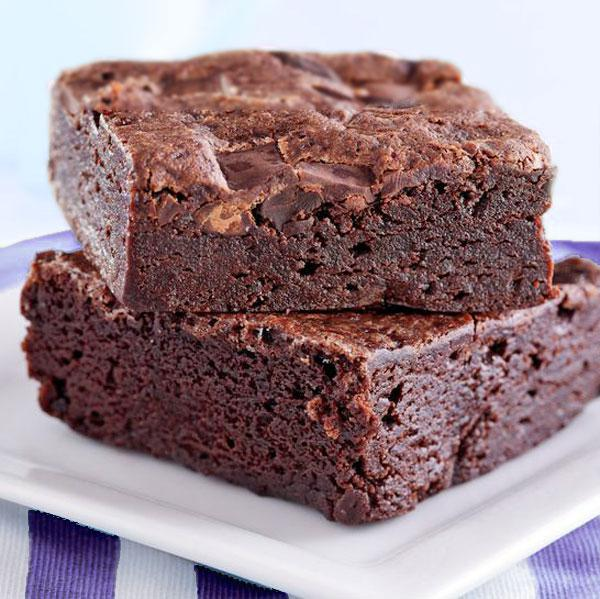

Return to Recipes
Brownie

Fudgy chocolate brownie to delight your sweet tooth!
A brownie, is a chocolate baked confection. Brownies come in a variety of
forms and may be either fudgy of cakey, depending on their density, they may also include nuts,
frosting, chocolate chips, or other ingredients.
This recipe is for a basic (yet incredibly delicious) fudgy brownie, but don't let that
stop your creativity. You can add crunched up pretzels, m&m's and serve with a ball of your
favorite ice cream, really sky's the limit with this brownie recipe. Delicious~!
Ingredients
- 73g All Purpose Flour
- 80g Cocoa Powder
- 3g Salt
- 2g Instant Coffee Powder
- 180g Sugar
- 100g Melted Butter
- 2 Large Room Temperature Eggs
- 10ml Vanilla Extract
- 100g Chopped Dark Chocolate
Steps to Follow
- Preheat your oven to 175º Celsius (350º Fahrenheit)
- Rub or spray non stick oil to a heat proof pan
- Place a parchment paper into the oiled pan
- In a large bowl, whisk your flour, cocoa powder, salt and instant coffee powder
- In a separate bowl, mix te sugar and melted butter well with a whisk
- In the same bowl, crack and whisk one egg at a time until well combined
- While whisking the eggs, sugar and butter, add in your vanilla extract and whisk vigorously
- Add your dry ingredients to the wet ingredients and fold the mixture with a rubber spatula
- Once everything is combined, add in your chopped chocolate and fold again until combined
- Spread your mixture into the prepared pan
- Place your pan in the oven for 35-40 minutes
- After the 35 minute mark, remove the pan from the oven and insert a toothpick to check the doneness of the brownie
- You will know it's done when the toothpick comes out slightly clean
- Let rest until it reaches room temperature, cut and serve
Return to Recipes